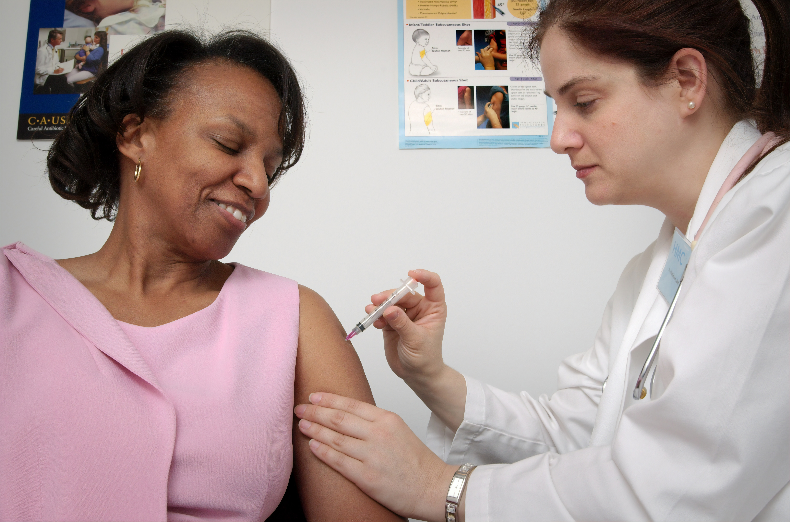
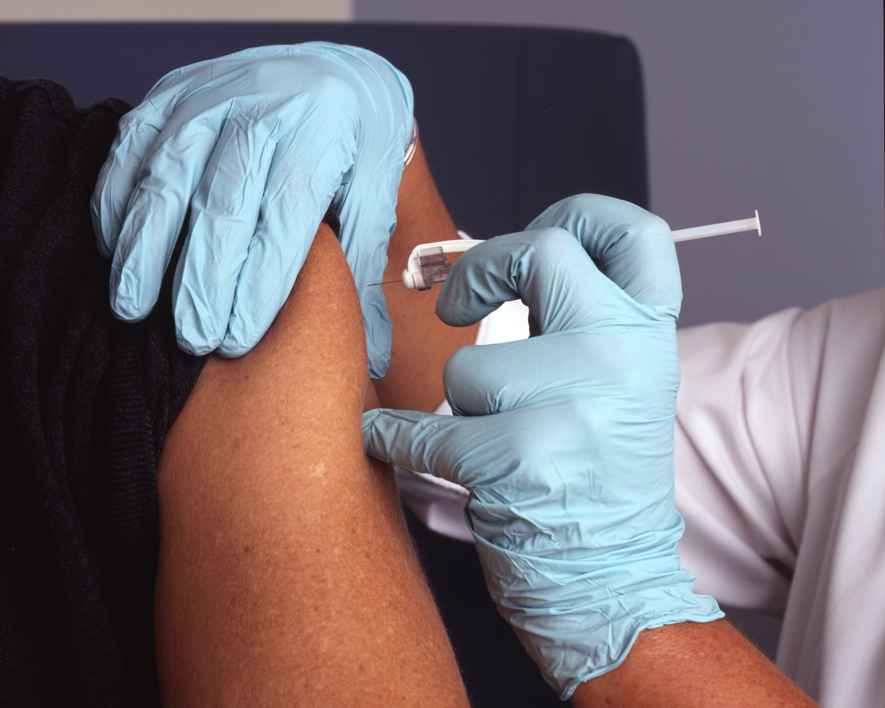

GALERIA

O crescente número de casos de pessoas que tomaram as duas doses ou dose única, no caso do imunizante da Janssen, das vacinas contra a Covid e que mesmo assim chegaram a falecer da doença, tem trazido ao debate a eficiência dos imunizantes. Para tratar sobre esse tema foram consultados os médicos Isabella Ballalai, Lorena de Castro Diniz e o secretário executivo de Saúde da Paraíba, Daniel Beltrammi.
Leia mais...O ministro da Saúde, Marcelo Queiroga, disse nesta quarta-feira (18) que a aplicação da terceira dose para reforçar a imunização contra a Covid-19 deve começar por profissionais de saúde e idosos. “A gente vai começar por grupos prioritários. De novo, profissionais de saúde, os mais idosos”, disse Queiroga à imprensa.
Leia mais...

Recentemente um estudo recente da Universidade de São Paulo (USP) e da Universidade Estadual Paulista (Unesp) avaliou o efeito das vacinas contra o novo coronavírus na população brasileira e concluiu que 91,49% das pessoas que morreram pela infecção, entre maio e julho deste ano, não tinham tomado vacina ou não estavam totalmente vacinadas.
Leia mais...

A Coordenadoria de Vigilância em Saúde (Covisa) da Secretaria Municipal de Saúde de São Paulo registra pelo menos dois casos de médicos que omitiram já estarem imunizados com duas doses de vacina contra a Covid-19 para conseguirem novas aplicações do imunizante como reforço.
Leia mais...